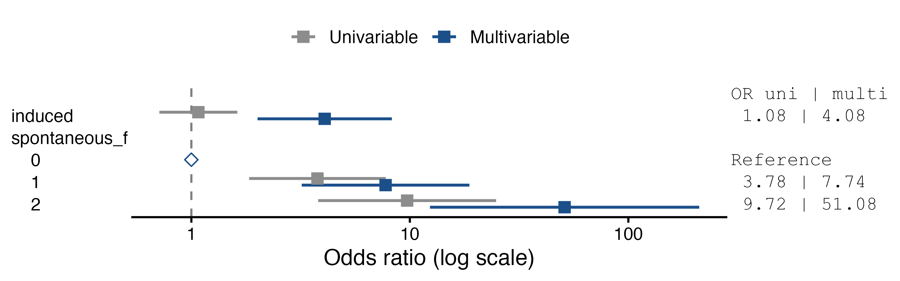

| Per set = Cases | Controls | Sets | Observations |
|---|---|---|---|
| 1 | 1 | 1 | 2 |
| 1 | 2 | 82 | 246 |
Reading the Output
Every table, and how its numbers are computed
The tables on this page come from one analysis of the infert data. Model 1 has the number of induced abortions; model 2 adds the number of spontaneous abortions, entered as a factor (0, 1, 2 or more).
Notation: \(\ell_0\) is the conditional log-likelihood at \(\boldsymbol\beta = 0\), \(\ell_1\) its maximum, \(k\) the number of estimated coefficients, \(n\) the number of observations analysed and \(d\) the number of cases.
Matched Sets
One row for each composition of a set (cases, controls), with the number of sets and the observations in them. This table is the first thing to check:
- a matching ratio you did not expect usually means the Matching Variable is wrong (for example, a variable that is not the set identifier);
- rows with 0 cases or 0 controls are uninformative sets. Usually missing values have removed every case or every control of the set. They do not enter the estimates, and the note gives how many sets are informative.
The counts are taken after removing the rows with a missing value in any variable of the analysis, as the models are fitted.
Descriptives
Descriptives ▸ Descriptive table (off by default).
| case = 0 | case = 1 | Total | ||
|---|---|---|---|---|
| case | n (%) | 165 (66.5%) | 83 (33.5%) | 248 (100.0%) |
| induced | Mean ± SD | 0.56 ± 0.73 | 0.59 ± 0.75 | 0.57 ± 0.74 |
| spontaneous_f | 0 | 113 (68.5%) | 28 (33.7%) | 141 (56.9%) |
| spontaneous_f | 1 | 40 (24.2%) | 31 (37.3%) | 71 (28.6%) |
| spontaneous_f | 2 | 12 (7.3%) | 24 (28.9%) | 36 (14.5%) |
A first table for a paper:
- the dependent variable: the numbers of controls and cases, with their percentages of the total;
- each covariate: mean ± SD in controls, in cases and in total;
- each factor: n (%) for every level, with percentages of the known values within each column;
- a Missing row, n (% of the column), under a variable only if it has missing values (see the endometrial cancer use case).
The table describes every row whose case/control status and matched set are known, and includes every variable in Covariates and Factors, whether or not it is in a model block. The models use fewer rows when there are missing values: only those complete for every variable.
Model Fit Measures
| Model | Deviance | AIC | BIC | R²-McF | R²-CS | R²-N | χ² | df | p |
|---|---|---|---|---|---|---|---|---|---|
| 1 | 181.436 | 183.436 | 185.854 | 0.001 | 0.000 | 0.001 | 0.123 | 1 | .726 |
| 2 | 128.357 | 134.357 | 141.613 | 0.293 | 0.193 | 0.372 | 53.202 | 3 | < .001 |
| Column | Definition |
|---|---|
| Deviance | \(-2\ell_1\) |
| AIC | \(-2\ell_1 + 2k\) |
| BIC | \(-2\ell_1 + k\log d\): the number of cases is the sample size, as BIC() uses for a Cox model |
| R²McF | McFadden: \(1 - \ell_1/\ell_0\) |
| R²CS | Cox & Snell: \(1 - \exp\{2(\ell_0 - \ell_1)/n\}\) |
| R²N | Nagelkerke: R²CS divided by its maximum, \(1 - \exp(2\ell_0/n)\) |
| Overall Model Test | likelihood ratio test of all coefficients against zero: \(\chi^2 = 2(\ell_1 - \ell_0)\) on \(k\) df |
The null model is \(\boldsymbol\beta = 0\): within each set, every subject is equally likely to be the case. The pseudo R² values therefore measure what the predictors explain within matched sets. They are not comparable with those of an unmatched logistic regression, whose null model has a single intercept.
Model Comparisons
| Model | Model | χ² | df | p | |
|---|---|---|---|---|---|
| 1 | - | 2 | 53.079 | 2 | < .001 |
Likelihood ratio test between consecutive blocks: \(\chi^2 = 2(\ell_1^{(2)} - \ell_1^{(1)})\), on as many df as coefficients were added. Every model is fitted to the same observations (those complete for all the variables in any block), so the models are nested.
Omnibus Likelihood Ratio Tests
| Predictor | χ² | df | p |
|---|---|---|---|
| induced | 19.149 | 1 | < .001 |
| spontaneous_f | 53.079 | 2 | < .001 |
One test per term. The model is refitted without that term’s columns, and the fit is compared with the full model. A factor with several levels gets a single test on several df. With an interaction in the model, the test of a main effect depends on the reference levels, as in jmv.
In jmv’s logistic regression these tests come from car::Anova. Here they are computed by the module, because car substitutes Wald tests for any model with strata.
Model Coefficients
| OR | Lower | Upper | p | p trend | OR | Lower Multivariable | Upper Multivariable | p | p trend | Estimate | SE | Z | ||
|---|---|---|---|---|---|---|---|---|---|---|---|---|---|---|
| induced | per unit | 1.077 | 0.714 | 1.624 | 0.725 | 4.076 | 2.008 | 8.274 | < .001 | 1.405 | 0.361 | 3.891 | ||
| spontaneous_f | 0 | 1.000 | 0.000 | 0.000 | 1.000 | < .001 | 0.000 | |||||||
| spontaneous_f | 1 | 3.776 | 1.838 | 7.758 | 0.000 | 7.744 | 3.200 | 18.736 | < .001 | 2.047 | 0.451 | 4.540 | ||
| spontaneous_f | 2 | 9.719 | 3.805 | 24.825 | 0.000 | 51.082 | 12.362 | 211.088 | < .001 | 3.933 | 0.724 | 5.434 |
One row per level, with the variable named once on the left (the layout of the prognosis module’s Cox regression):
- a factor starts with its reference level, OR = 1, set in the Reference Levels box (default: the first level), then one row for each other level, labelled by the level alone and compared with the reference;
- a covariate has one row, per unit: the OR for a one-unit increase;
- an interaction has one row per coefficient, labelled by the levels involved;
- there is no intercept row (see the method).
OR is the odds ratio of being a case (the non-reference level of the dependent variable) rather than a control, within the matched sets. Its confidence interval is a Wald interval, exponentiated (\(\exp(\hat\beta \pm z_{1-\alpha/2}\,\mathrm{SE})\), as confint() gives for clogit), at the level set in Confidence interval (95% by default), and p is the Wald test. On the reference row of a factor with three or more levels, p is the likelihood ratio test of the whole factor, the same as in the omnibus table.
The options of Model Coefficients:
- Univariable and multivariable adds the odds ratios of each variable alone (Univariable) beside those of the model (Multivariable). Both are estimated on the same rows, those complete for every variable of the model, so the difference between them is the adjustment alone.
- Trend test (factors with 3+ levels) adds p trend on the reference row: the factor replaced by scores 1, 2, 3, … in the order of its levels (Wald test of the score). The univariable trend uses the factor alone, and the multivariable trend keeps the other variables of the model. The scores follow the order of the levels in the data, whichever level is the reference, so order the levels before testing. There is no trend test for a factor that is part of an interaction.
- Log odds ratio, SE and Z adds the estimate \(\hat\beta\) (the log odds ratio), its standard error and \(Z = \hat\beta / \mathrm{SE}\) at the right.
Forest Plot
Forest plot draws the odds ratios of each model, one line per row of the table. Reference levels are open diamonds at 1. With Univariable and multivariable, both estimates are drawn, univariable in grey.

Notes
The notes that explain each table (how the odds ratios are defined, the number of rows used, what the matched-set table means) are hidden by default. Tick Show notes in Options to see them:
| OR | Lower 95% CI | Upper 95% CI | p | ||
|---|---|---|---|---|---|
| induced | per unit | 4.076 | 2.008 | 8.274 | < .001 |
| spontaneous_f | 0 | 1.000 | < .001 | ||
| spontaneous_f | 1 | 7.744 | 3.200 | 18.736 | < .001 |
| spontaneous_f | 2 | 51.082 | 12.362 | 211.088 | < .001 |
Note. Odds ratios (OR) of "case = 1" vs. "case = 0" within the matched sets, with 95% confidence intervals. Factors: OR against the reference level (OR = 1); on the reference row of a factor with three or more levels, p of the likelihood ratio test of the whole factor. Covariates: OR per one-unit increase. Multivariable ORs are adjusted for the other variables in the model.
Warnings are shown whatever this option says: predictors that cannot be estimated (Not estimable: …), fitting problems, the number of uninformative matched sets, and reference levels not found.
Collinearity Statistics
| VIF | Tolerance | |
|---|---|---|
| induced | 2.150 | 0.465 |
| spontaneous_f | 2.150 | 0.465 |
Variance inflation factors from the correlation matrix of the estimated coefficients. For a term with more than one coefficient, such as a factor with three levels, the table gives the generalised VIF of the term as a whole (Fox and Monette 1992), with tolerance = 1/VIF. This is the formula of car::vif, except that the strata are not counted as a term.
What changed from jmv’s logistic regression
| jmv Binomial Logistic Regression | condLogReg |
|---|---|
glm(family = binomial) |
coxph(... + strata(set), method = "exact"), as clogit |
| — | Matching Variable, Likelihood option, Matched Sets table |
| — | Descriptive table by case/control status, with missing values |
| estimates, SE, Z first; odds ratios and their intervals on request | odds ratios, CI and p by default, one row per level with the reference level at OR = 1 (as the prognosis module); log OR, SE and Z on request |
| — | univariable beside multivariable odds ratios, trend test, forest plot |
| notes always shown | explanatory notes on request (Show notes); warnings always |
| intercept | none (absorbed by the matched sets) |
| Tjur’s R² | removed (needs fitted probabilities) |
omnibus tests from car::Anova |
likelihood ratio tests computed by refitting |
VIF from car::vif |
the same GVIF, with the strata excluded |
| estimated marginal means | removed (need absolute probabilities) |
| prediction: classification, ROC, AUC, cut-off | removed (need absolute probabilities) |
| saved predicted values, residuals, Cook’s distance | removed |
| data weights | ignored: a weight would break the matched sets |
References
Fox, John, and Georges Monette. 1992. “Generalized Collinearity Diagnostics.” Journal of the American Statistical Association 87 (417): 178–83. https://doi.org/10.1080/01621459.1992.10475190.